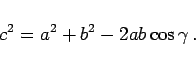

Inhalt Index DeskTop Bronstein

 Geometrie Ebene Trigonometrie Berechnungen in ebenen schiefwinkligen Dreiecken Grundformeln und Sätze
Geometrie Ebene Trigonometrie Berechnungen in ebenen schiefwinkligen Dreiecken Grundformeln und Sätze


Es werden die folgenden Bezeichnungen verwendet: a, b, c - Seiten;  - die ihnen gegenüberliegenden Winkel; S - Flächeninhalt; R - Radius des Umkreises; r - Radius des Inkreises;
- die ihnen gegenüberliegenden Winkel; S - Flächeninhalt; R - Radius des Umkreises; r - Radius des Inkreises;
 - halber Dreiecksumfang.
- halber Dreiecksumfang.
| (3.92) |
|  | (3.94) |
| (3.95a) |
| (3.95b) |
 |
(3.96) |
| (3.97) |